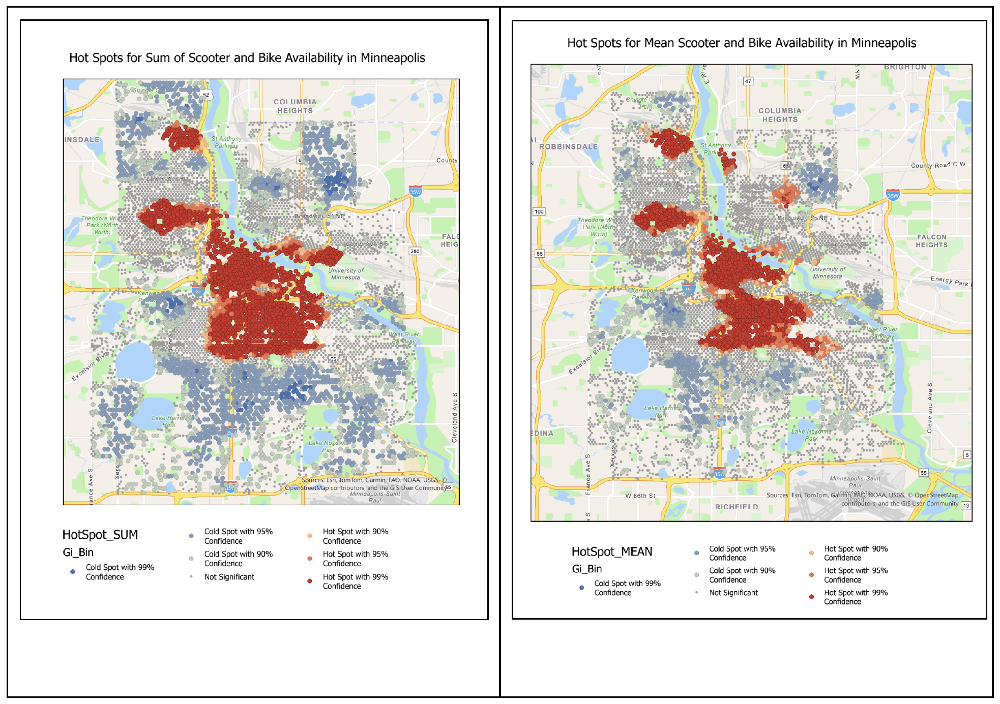
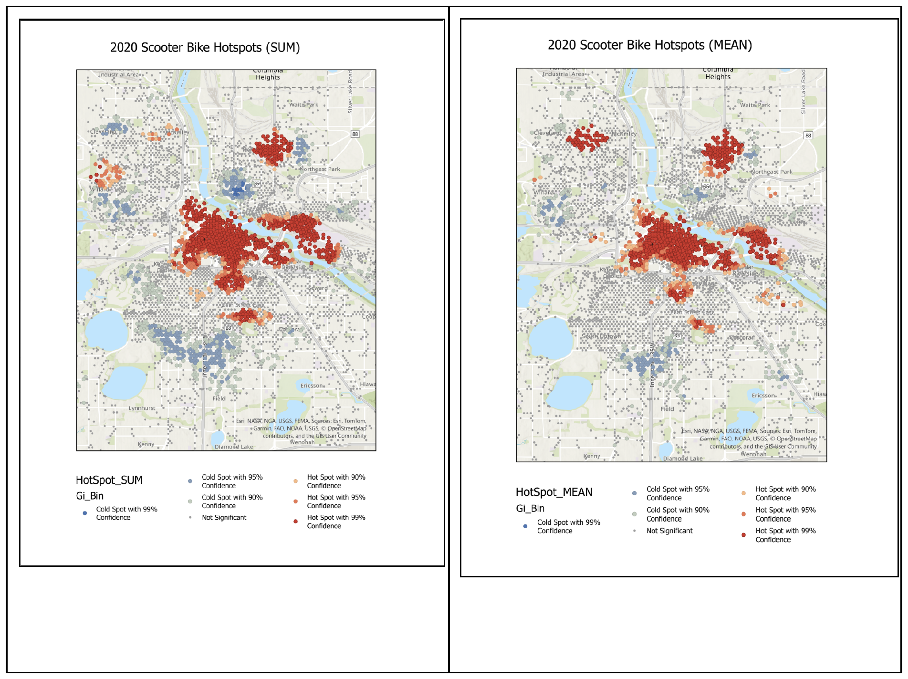
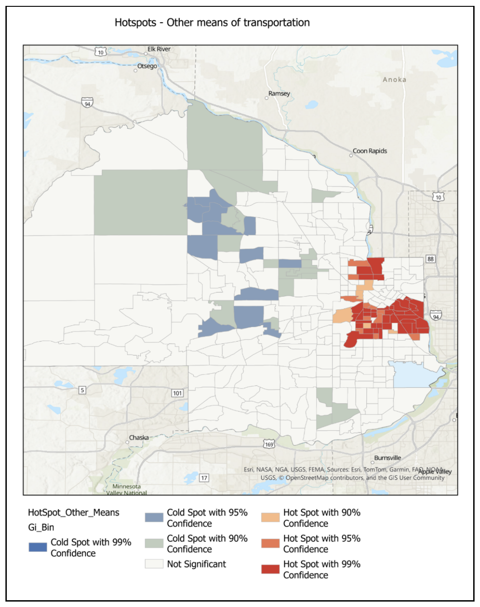
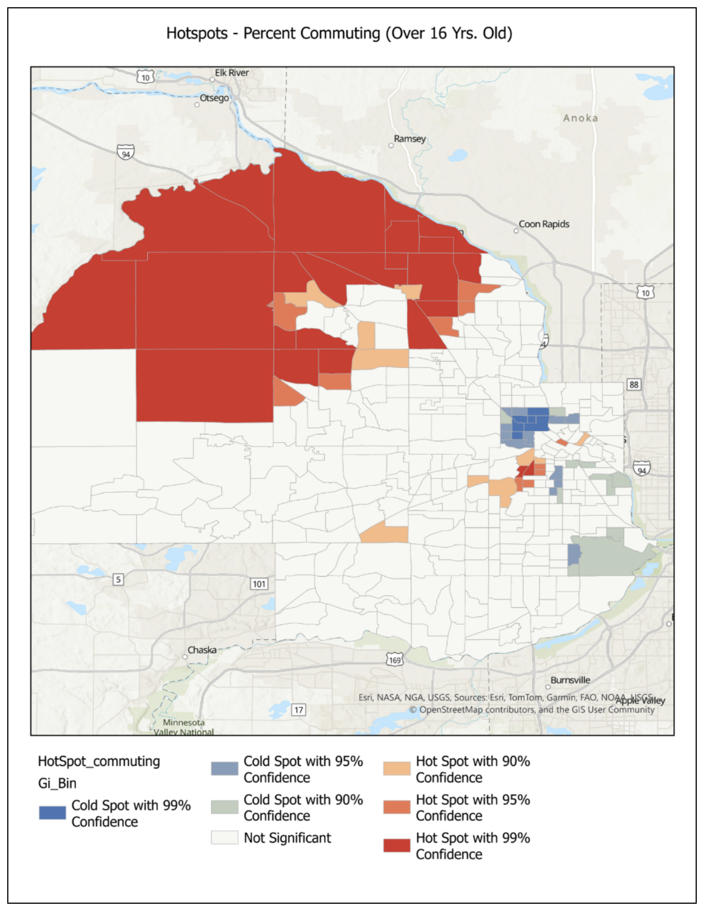

A Hot Spot analysis of shared scooter and bike availability across the city, compared against ACS commuting-mode data for Hennepin County — plus a look at whether that spatial pattern shifted between a pandemic-year snapshot and today.

Minneapolis publishes hourly scooter and bike availability data, aggregated to the nearest street or trail centerline. On its own, that's just a count of where scooters happen to be sitting. The more interesting question is whether that availability tracks how people in a given area already get around — do neighborhoods that already walk, bike, or take transit more also have better scooter access, or does availability cluster somewhere else entirely?
A second question came along for free: 2020 availability data exists too, from the middle of the pandemic. Would that year's hot spots look different from a normal year — more tightly clustered downtown while people avoided shared transportation, or spread out differently as commuting patterns shifted?
Street centerlines are converted to centroid points, since Hot Spot analysis needs point features rather than lines. Availability records are then summarized to the mean and sum of scooters/bikes available per street segment, and joined back to those points — which took some cleanup, since the two tables used different ID formats and the availability table also included trail segments with no matching street centroid.
Getis-Ord Gi* is run on both the sum and mean fields, using a fixed distance band with Manhattan distance rather than the default Euclidean option, since Manhattan distance suited the centroid features better. The whole process was then wrapped into a reusable function, so the same pipeline could be re-run against the 2020 dataset without repeating every step by hand.

The shift between the two years is the first real finding: 2020's hot spots stayed close to downtown and the river, while by 2024 they'd spread into areas further out — consistent with a broader return to more normal, more distributed movement patterns after the pandemic, though this analysis alone can't prove causation.
To see whether availability actually lines up with existing travel behavior, ACS 5-year commuting-mode estimates were joined to Hennepin County census tracts, and the same Hot Spot analysis was run on four variables: percent walking to work, percent using public transit, percent using other means, and overall percent commuting. This time with queen contiguity and Euclidean distance - tracts share edges and corners, which suits polygon data better than the point-based approach above.
The ACS data doesn't have a "biked" or "scootered" category, so the closest available proxy was "other means" - reasoned through directly, since scooters aren't city-owned and don't really qualify as public transit, even though a rider might think of it that way.

That overlap is the second real finding: the "other means" and "walked" hot spots both land in roughly the same corridor as the scooter/bike availability hot spots, which is a reasonable, if not definitive, signal that shared-mobility availability is at least loosely tracking existing active-commute behavior rather than sitting somewhere unrelated.
The original plan called for a fourth ACS variable, but technical issues with the Census website that day made a new download impractical. Overall percent commuting was substituted instead - and it turned up the most surprising result of the whole analysis.

Most of the hot spots for overall commuting sit in the NW suburbs of the metro, well outside Minneapolis proper, with cold spots just northwest of the city itself. That's a genuinely unexpected distribution, and a reminder that a substitution made for practical reasons can still turn up something worth a second look.
Queen contiguity was chosen for the tract-based analyses on the reasoning that tracts share edges and corners - a defensible choice, but not one that was tested against alternatives here. A different contiguity method could shift these results somewhat, and that's flagged as an open question rather than a settled one.